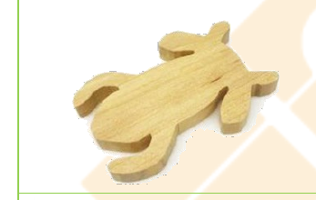
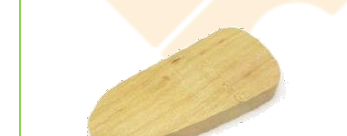
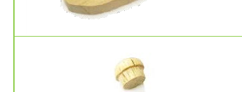
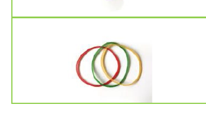
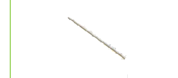

STEAM 教案
呱呱響板教案
編號 03-P1-02 ・ 難度：初級
本教案以「呱呱響板」青蛙玩具為主題，運用槓桿原理與共鳴效果，讓孩子透過敲擊產生逼真蛙鳴，同時認識台灣原生與外來種青蛙的生態保育議題。

🔔
適合年級
5 歲以上（親子）
教學時間
45 分鐘
難度
初級
教學領域
S 科學・T 技術・E 工程・A 藝術・M 數學
教案類型
STEAM 親子創客教案
課程內容
槓桿原理、共鳴與彈力介紹（S）・ 砂磨、膠合技巧（T）・ 組裝技巧（E）・ 塑型彩繪與模仿（A）・ 刻度概念（M）
課程流程
認識青蛙構造與特徵 ・ 砂磨蛙木塊 ・ 竹籤與橡皮筋組裝測試音調 ・ 上下層組合黏眼睛 ・ 不同聲調的呱呱叫 ・ 彩繪美化與外來種青蛙討論
課程材料
下層青蛙木塊 ×1（桃花心木） ・ 上層青蛙木塊 ×1（桃花心木） ・ 木珠 ×2 顆 ・ 橡皮筋 ×1 條 ・ 竹籤 ×1 根
其他材料與工具：砂紙、白膠或保麗龍膠、剪刀、鉛筆、橡皮擦、色筆
延伸學習
台灣原生與外來種青蛙保育議題 ・ 聲音共鳴原理生活應用 ・ 節奏創作與音樂律動
學習向度與目標
S 科學
槓桿原理、共鳴、彈力
T 技術
砂磨、膠合
E 工程
組裝
A 藝術
塑型、彩繪、模仿
M 數學
刻度
完整教學步驟
材料清單

下層青蛙木塊
1 個
國產木材：桃花心木

上層青蛙木塊
1 個
國產木材：桃花心木

木珠
2 顆

橡皮筋
1 條

竹籤
1 根
其他材料與工具：砂紙、白膠或保麗龍膠、剪刀、鉛筆、橡皮擦、色筆
情境引導
森林裡的水池邊，青蛙媽媽們在說話：「不知道調皮的小蛙們跑去哪兒玩耍，到現在還沒回家呢！」。好心的青蛙村長聽到了，找了許多人一起拿著大聲公，在森林裡四處尋找牠們，呱呱呱，呱呱呱！
活動一：製作呱呱響板
- 先選擇想製作的青蛙種類，認識選定的青蛙，了解其構造與特徵。
- 依照選定的蛙的特徵，砂磨兩個蛙木塊，並砂磨粗糙與銳利的邊緣。
- 將竹籤放置於兩個蛙木塊中間，並用橡皮筋纏繞 2-3 圈。
- 將竹籤調整在橡皮筋之間，不要讓竹籤滑走。
- 試著移動竹籤與橡皮筋到距離上層青蛙木塊尾端約 1.5-2 公分的位置，並敲打青蛙，聽聽看，當竹籤與橡皮筋在不同位置時，是否會發出不同的聲音。
- 選定位置後，用鉛筆做記號。
- 將整隻蛙拆解，在記號的位置上黏上竹籤，並剪掉多餘的部分。
- 用橡皮筋組合上下層青蛙木塊。
- 在青蛙的頭部位置，黏上 2 個木珠，當青蛙的眼睛。
活動二：不同聲調的呱呱叫
- 試試看，能讓小青蛙輕輕跳動嗎？
- 有什麼方式能改變青蛙的叫聲？
- 怎樣讓青蛙的叫聲更洪亮？
- 用呱呱蛙打著節奏，唱一首歌吧！
活動三：這是什麼蛙？
- 根據蛙的特徵，用色筆將蛙上色。
- 發揮創意想想看，還能用什麼素材表現這隻蛙的特徵呢？
活動四：討論
- 在台灣，有哪些外來種的青蛙是佔據棲地、逼走原生蛙，需要移除的青蛙？
- 哪些是要保育的青蛙？
注意事項
- 拍打青蛙時會發出聲音，於較安靜的場合，不可隨意打擾他人。
- 不可以靠近人的耳邊拍打，以免傷害別人的聽力。
- 在操作工具時，要特別注意安全，並遵從大人的指示，以免受傷。
- 在塑型特徵的時候，可以使用砂紙包覆木棒或小木塊，製作成塑型工具。砂磨時要注意避免手不小心磨到。